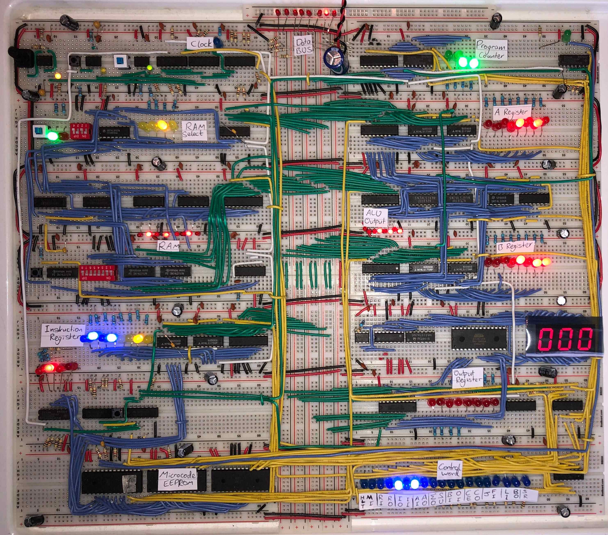
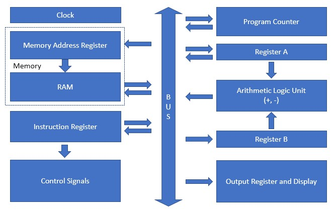
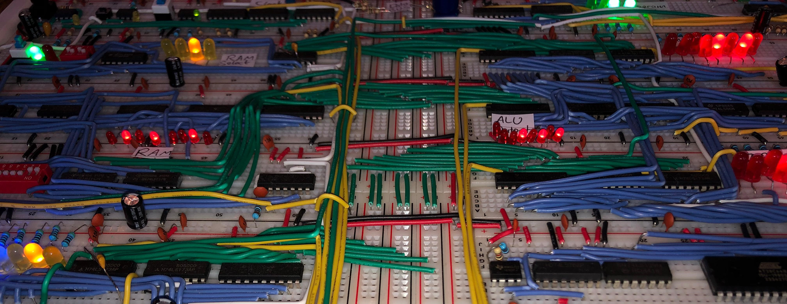
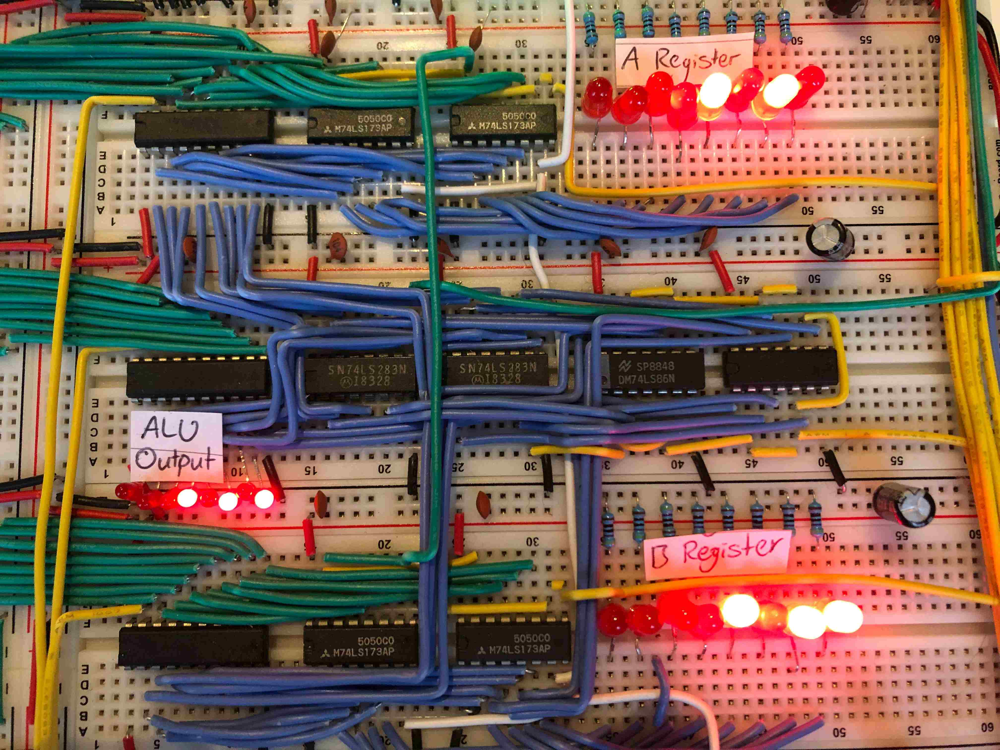

Building an 8-Bit Computer from Scratch
Having done a fair bit of programming I eventually asked myself how does a computer actually work and run a program? Initially I thought it would be a quick google, watch a few videos and then that was that. But after at least 100 hours of work, I can confidently say I’m satisfied with the answer I got.
What it comes down to is the CPU, this is the brain of the computer. All programming code, no matter what language, is eventually compiled into machine language the CPU can run a program with. So of course I had to build my own CPU using only low-level TTL chips.

After a bit of a convoluted journey, and an initial failed attempt, I finally have a working 8-bit programmable computer that runs on a custom machine code. I have to say, there were two incredible resources for this:
- Ben Eater’s 8-bit computer YouTube series. An incredible series where Ben starts from the absolute fundementals, and explains how every chip works from the level of transistors. I highly recommend his series, even just to watch and not follow the build.
- Reddit. Even though Ben Eater’s series is fantastic, no one understands how his computer actually works because there are so many shortcuts he takes. This is where I failed first time, I followed blindly and came to many power issues. Luckily a few years later I found the subreddit on Ben Eater’s 8-bit computer and it had so much information on how to fix the issues I previously had. This gave me the confidence to jump into the build again.
How does a CPU work?
If you want all the detail Ben Eater’s series is definietly the place to go. But I’ll give a quick overview of each modules in the CPU:

I was building the most simple architecture for a programmable CPU, but it still contains all major components. It’s a very modular design, so we can think of the main modules as:
- Clock: synchronises all other modules and data transfer. My CPU is upto 1MHz
- ALU: where the calculations happen. My CPU can only add and subtract
- Register A/B: Used to store actively used data. Each register can hold one 8-bit number
- RAM: this is where your program is stored, can hold only 16x 8-bit numbers
- Memory Register: used to select a RAM data line, eg. get the 8-bit number stored at index 4 (out of 16)
- Instruction Register: translates the machine code into a control word which controls all other modules
- Program Counter: counts what line (ie. what line in RAM) the program is currently on
- Output Register: used to display an 8-bit number to the user
- BUS: used to transfer data around the CPU between modules

Extensions in my build
To test my understanding I wanted to build some additional functionality in my CPU that wasn’t in Ben Eater’s original. But after spending over 100 hours I wanted to do the simplest thing possible. So I implemented the capability to put the value 1 on the BUS directly without having to enter the value 1 in the machine code. This means I could write microcode to increment or decrement a value in the RAM by 1 using only one line of code. Without this change it would have taken 3 lines of code, (load RAM, subtract 1, save to RAM). I’m particularly proud of this because I haven’t seen an extension like this before, and it enables programs that weren’t possible before, for example Factorial.
How do you program the CPU
Using the machine code instructions below you can write a program. For the computer to run the program it needs to be manually entered into the RAM using DIP switches - these are the red toggles on the CPU. Then once the RAM is loaded start the clock and it will follow the instructions.
| Machine Code | Instruction | Description |
|---|---|---|
| 0000 | NOP | No operation |
| 0001 | LDA X | Load RAM line X into Register A |
| 0010 | ADD X | Add RAM line X to Register A |
| 0011 | SUB X | Subtract RAM line X from Register A |
| 0100 | STA X | Store Register A in RAM line X |
| 0101 | LDI X | Load (immediate) value X into Register A |
| 0110 | ADI X | Add (immediate) value X to Register A |
| 0111 | SUI X | Subtract (immediate) value X from Register A |
| 1000 | JMP X | Jump to RAM line X (change program counter to X) |
| 1001 | JC X | Jump to RAM line X if carry (ie. if ALU has rolled past 255) |
| 1010 | JNC X | Jump to Ram line X if not carry |
| 1011 | INC X | increment RAM line X by 1 |
| 1100 | DEC X | decrement RAM line X by 1 |
| 1101 | SWP X | Swap Register A with RAM line X |
| 1110 | OUT | Register A to Output Register |
| 1111 | HLT | Halt the program (stop the clock) |
An example program
Add X + Y
The code below is adding 42 + 13. The values 42 and 13 are part of the program and entered on lines 4 and 5. The CPU always starts at line 0 and works sequentially (unless there is a jump). Walking through the program we have:
- Load 42 into register A
- Add 13 to register A (42) and store answer in register A
- output register A
- stop the program
| Line | Instruction | Machine Code |
|---|---|---|
| 0 | LDA 4 | 0001 0010 |
| 1 | ADD 5 | 0010 0011 |
| 2 | OUT | 1110 xxxx |
| 3 | HLT | 1111 xxxx |
| 4 | 42 | 0010 1010 |
| 5 | 13 | 0000 1101 |

Fibonacci Sequence
This is a bit of a step up from the one above. It has the conditional JC which jumps if the carry flag is set. The flag is set if the previous add (or SUB, DEC, INC) causes an overflow. So line 6 JC will only trigger when the sequence is above 255 (the largest number the CPU can handle) and will go back to the beginning of the program, otherwise it will skip and go to line 7.
| Line | Instruction | Machine Code |
|---|---|---|
| 0 | LDI 1 | 0101 0001 |
| 1 | STA 11 | 0100 1111 |
| 2 | STA 12 | 0100 1110 |
| 3 | OUT | 1110 xxxx |
| 4 | STA 12 | 0100 1110 |
| 5 | ADD 11 | 0010 1111 |
| 6 | JC 0 | 1001 0000 |
| 7 | SWP 12 | 1101 1110 |
| 8 | STA 11 | 0100 1111 |
| 9 | LDA 12 | 0001 1110 |
| 10 | JMP 3 | 1000 0011 |
| 11 | ||
| 12 |
Here’s the Finbonacci program in action.